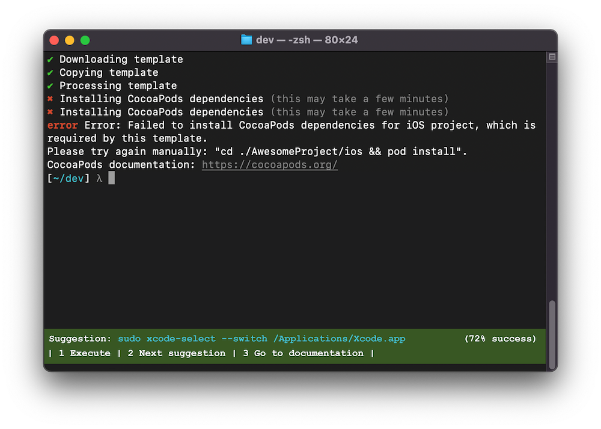

I work on AI + developer tools.
How many times have you ran a command in your terminal, got an error message, Googled the error message, clicked on a Stack Overflow result, and then copy pasted the solution back into your terminal?
I do this a lot.
It is as if I am traversing a knowledge tree on Google or Stack Overflow, but in a manual and very tedious way. I'm often solving one symptom at a time and not seeing the underlying problem.
In fact, I wrote about this before, Stack Overflow knows your future problem.
There is hope! A virtual assistant in your terminal powered by the crowd.
At a high level, this system sees a command line error, automatically pulls the most relevant solution from Stack Overflow, presents it in the terminal, then runs it.
Let me break down the v1 approach in more details:
But wait, there is more!
Although Stack Overflow is a good starting point, the system could be building its own crowd-sourced decision tree. As more users use the system and face similar errors, the system will be able to build a confidence level for each solution and identify the important variables (e.g., the version of a particular package). Large language models, such as Codex, can be used for refinement.
For example, the system can learn that to solve Error #123 when running React for the first time, then you should run Foobar -a -b if you are on macOS >10.14 and have NPM 8.19.2 installed, else you should run... and so on.
The system can preemptively know what errors you will have and can put together sequences of commands that will get you to the goal state more efficiently.
Additionally, it could help you rollback, generate documentation, export the suggestions to a script, or create a container so that these problems aren't an issue for you or your team in the future.
What's next? The basic concept works. There are problems to overcome: generalize the approach to more complex scenarios, fix corner cases, scale such that there is a crowd-sourced decision tree, and do so while enforcing security and privacy.
Don't worry, Clippy will be back!
Thanks to Alex Williams and Gregory Croisdale for the early discussions about this project.